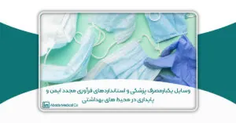

این مقاله توسط سرکارخانم آناهید زارع و زهرا قاسمی نوشته شده؛ و برای یازدهمین کنگره کنترل عفونت ارسال شده است.
چکیده
وسایل یکبار مصرف پزشکی با توجه به جایگاه اساسی در ارتقا بهداشت عمومی و پیشگیری از انتقال عفونت، مورد توجه ویژه ای قرار گرفته است. این مقاله به بررسی این وسایل و اهمیت استانداردهای فرآوری مجدد آنها با تاکید بر ایمنی و پایداری در محیطهای پزشکی میپردازد.
مقدمه
دستگاه پزشکی به هر وسیله، دستگاه، ماشین یا نرم افزاری گفته میشود که برای تشخیص، درمان یا پیشگیری از بیماری استفاده میشود. میتوان آن را به تنهایی یا به صورت ترکیبی برای استفاده انسان در بازار عرضه کرد. این تعریف توسعه یافته منجر به تنوع بسیار زیادی از محصولات در بازار تجهیزات پزشکی میشود. تنوع محصول در بازار تجهیزات پزشکی قوانین پیچیدهای را به همراه دارد و به استراتژیها، برنامهها و سیاستهای تودرتو نیاز دارد. WHO گزارش داده است که در دو سوم جهان هیچ مقررات قانونی کافی در ارتباط با وسایل پزشکی وجود ندارد.
پیشرفت تکنولوژی منجر به توسعه روزافزون دستگاههای پزشکی پیچیده مانند دستگاههایی برای حداقل تهاجمی روش ها، با لومنهای کوچکتر و با مکانیسم های کاری ظریف تر، تمیز کردن صحیح برخی از دستگاهها دشوار یا حتی غیرممکن میکند. عموما وسایل یکبار مصرف پزشکی از مواد پلیمری مانند پلاستیک، که در برابر فرآیندهای استریلیزاسیون (نیاز به دمای بالا یا سایر درمان های فیزیکی یا شیمیایی تهاجمی ) مقاوم نیستند ساخته میشوند.علاوه بر این، ظهور بیماریهای منتقله از طریق خون مانند هپاتیت و HIV باعث تسریع توسعه و افزایش استفاده از وسایل پزشکی یکبار مصرف شده است. برای وسایل پزشکی در نظر گرفته شده توسط سازنده، برای استفاده مجدد، با توجه به الزامات اساسی دستورالعمل تجهیزات پزشکی، سازنده باید اطلاعاتی در مورد فرآیند مناسب برای اجازه استفاده مجدد ارائه دهدشامل؛ تمیز کردن، ضد عفونی کردن، و بسته بندی و هرگونه محدودیت در تعداد استفاده مجدد، همانطور که در شرح داده شده است استاندارد ۱۷۶۶۴:۲۰۰۴ ISO شرح داده شده است ارائه دهد. بدیهی است که برای دستگاه های یکبار مصرف چنین اطلاعاتی وجود ندارد. دستگاههای پزشکی که برای یک بار مصرف در نظر گرفته شدهاند باید روی برچسب خود علامتی داشته باشند که دستگاه برای یک بار مصرف است.از نظر معناشناسی، یک پارادوکس به عنوان معنای ”یک بار مصرف” پردازش مجدد را حذف میکند. با این حال، بازفرآوری عمدتاً با ملاحظات اقتصادی آشکار منتشر میشود. صنعت تجهیزات پزشکی، شامل پویاییهای مختلف و ذینفعان بسیاری است و بسته به فناوری در حال توسعه، نیازمند تغییر سریع در همکاریهای چند رشتهای است. این بخش با بیش از ٤٠٠ میلیارد دلار یکی از سریع ترین بخش ها در حال رشد است.
اهمیت وسایل یکبار مصرف در کاهش ریسک انتقال عفونت و حفظ ایمنی بیماران و پرسنل در محیطهای پزشکی را برجسته میکند. دادههای جمع آوری شده توسط سازمان جهانی بهداشت از ۵۶ کشور در سال ۲۰۰۴ میلادی نشان داده که میزان سالیانه جراحیهای عمده بین ١٨٧ میلیون الی ٢٨١ میلیون یا تقریبا یک عمل جراحی به ازای هر ۲۵ نفر جمعیت دنیا میباشد. محدودیت منابع، افزایش هزینه خدمات، لزوم رعایت موازین ایمنی و کیفیت از جدی ترین چالشهای پیشه رو نظامهای سلامت در سراسر جهان میباشد. با توجه به بالا بودن میزان جراحیها و مداخلات تشخیصی، درمانی، تهاجمی و این که در تمامی پروسیجرها و اقدامات جراحی احتمال تماس ابزار و وسایل جراحی از یک سو با بافت و فضاهای استریل بدن بیماران از سوی دیگر با خون و ترشحات بیماران قطعی است. لذا تضمین کیفیت فرآیند استریلیزاسیون و شستشو ، ضدعفونی و …. از مواردی است که به به جهت کاهش احتمال ایجاد عفونتهای متقاطع از بیماری به سایر بیماران مورد تاکید بسیار میباشد. در این راستا گرچه یکی از رویکردهای نظامهای ارائهکننده خدمات در سراسر دنیا در راستای کاهش هزینهها و مواجهه با محدودیت منابع اقتصادی ، فرآوری مجدد وسایل یکبار مصرف بوده است، لیکن به لحاظ رعایت موازین پیشگیری و کنترل عفونت، ایجاد چارچوب اجرایی و نظارتی دقیق بر نحوه استریلیزاسیون و ضد عفونی وسایل پزشکی جهت استفاده مجدد الزامی است.
استاندارد استرلیزه کردن دستگاه های پزشکی ISO 17664:2004
این استاندارد اطلاعاتی را که توسط سازنده دستگاههای پزشکی در مورد دستگاههای پزشکی قابل استریلیزه مجدد هستند و پروسه استرلیزه کردن دستگاههای پزشکی، ارائه میدهد.
در این استاندارد الزامات مورد نیاز برای پروسه تولید که شامل همه یا برخی از فعالیتهای زیر است، مشخص شده است:
- آماده سازی در نقطه استفاده؛
- تهیه ، تمیز کردن ، ضد عفونی کردن.
- خشک کردن؛
- بازرسی ، نگهداری و آزمایش؛
- بسته بندی؛
- استریلیزه کردن؛
- ذخیره سازی.
انتظار میرود که سازندگان دستگاههای پزشکی آموزشهای لازم در جهت این پروسه را در دسترس افرادی که احتمالاً مسئولیت استفاده از دستگاه را دارند، بگذارند. احتمالاً برخی از روشها، عمومی و شناخته شده بوده و از تجهیزات و مواد مصرفی مطابق با استانداردهای شناخته شده استفاده میشود. در این حالت، یک مرجع از دستورالعملها لازم است. برای آن دسته از وسایل پزشکی که در آن لازم است که دستورالعمل استفاده از دستگاه پزشکی ارائه شود، می توان از وسایل دیگر برای اطلاع رسانی، به عنوان مثال کتابچه راهنمای کاربر، نمادها یا نمودارهای دیواری استفاده کرد. (نکته: ۱۷۶۶۴:۲۰۰۴ ISO برای دستگاههای نساجی که در سیستمهای پوشاندن بیمار یا لباسهای جراحی استفاده میشوند، کاربرد ندارد.)
وسایل یکبار مصرف پزشکی
طبقه بندی وسایل یکبار مصرف پزشکی از لحاظ کنترل عفونت
١. وسایل یکبار مصرف پزشکی غیرتراکمی: این وسایل شامل سوزنها، سرنگها، کانولها و دستکشهای پزشکی است که بعد از استفاده دور انداخته میشوند تا جلوگیری از انتقال عفونت به بیماران و پرسنل درمانی.
٢. وسایل یکبار مصرف پزشکی نیمه تراکمی: این دسته شامل وسایل نظیر کاتترها، لولههای تراشیده، لولههای خونگیری و غیره است که بعد از استفاده دور انداخته میشوند یا به روشهای خاص تعقیم مجدد میشود.
٣. وسایل یکبار مصرف پزشکی تراکمی: این دسته شامل وسایل نظیر لباسهای حفاظتی، ماسکهای صورت، عینکهای حفاظتی و غیره است که بعد از استفاده دور انداخته میشوند.
۴. وسایل یکبار مصرف پزشکی قابل بازآغاز: این دستگا شامل وسایل نظیر سپتومها، سطحهای غیر کاتیاب، کیسهای زباله پزشکی است که بعد از استفاده با روشهایی کاملا بازآغاز میشوند.
طبقه بندی وسایل یکبار مصرف پزشکی از لحاظ بازآوری مجدد
١. وسایل یکبار مصرف قابل بازآوری مجدد: سرنگ ها، کاتترها، دستکش ها، ماسکها، لوازم آزمایشگاهی یکبار مصرف
٢. وسایل یکبار مصرف غیرقابل بازآوری مجدد: سوزن ها، شیشه های آزمایشگاهی یکبار مصرف، پتوهای بستر بیمارستانی، لوازم جراحی یکبار مصرف
دلایل فراوری و استفاده مجدد از وسایل پزشکی یکبار مصرف
١. کاهش هدر رفتن منابع: فرآوری و استفاده مجدد از وسایل پزشکی یکبار مصرف میتواند به کاهش هدر رفت منابع طبیعی مانند پلاستیک، فلز و غیره کمک کند. زیرا این عمل باعث:
- افزایش دوبارهپذیری: با استفاده مجدد از وسایل، نیاز به تولید مکرر و مصرف منابع کاهش مییابد.
- کاهش پسماند: استفاده مجدد از وسایل پزشکی کمترین میزان پسماند تولیدی را نتیجه میدهد و در نتیجه، به حفظ محیط زیست کمک میکند.
- اقتصاد مدیریت منابع: فرآوری مجدد باعث اقتصاد در مصرف منابع مالی، انرژی و مواد میشود.
- کاهش هزینههای تولید: با استفاده مجدد از مواد اولیه، هزینههای تولید و فرآوری میتواند کاهش یابد.
٢. حفظ محیط زیست: استفاده مجدد از وسایل پزشکی یکبار مصرف میتواند به حفظ محیط زیست کمک کند، زیرا این عمل باعث:
- کاهش پسماند :استفاده مجدد از وسایل پزشکی به معنای کاهش تولید پسماند پزشکی و در نتیجه کاهش فشار زیست محیطی میباشد.
- کاهش مصرف منابع طبیعی :با استفاده مجدد از وسایل، نیاز به استفاده مجدد از منابع طبیعی کاهش مییابد که به حفظ تنوع زیستی کمک میکند.
- کاهش انرژی مصرفی :فرآوری مجدد مواد مصرفی نیاز به کمترین میزان انرژی نسبت به تولید از ابتدا دارد، که به کاهش انتشار گازهای گلخانهای کمک میکند.
- تشویق به مدیریت دقیق پسماند :این روند تشویق به استفاده مدیرانه و مسئولانه از وسایل پزشکی را ترویج میدهد.
٣. صرفه جویی در هزینه: فرآوری و استفاده مجدد از وسایل پزشکی یکبار مصرف باعث صرفه جوئی در هزینههای سلامت و درمان خواهد شد، زیرا این عمل باعث:
- کاهش هزینههای تولید :با استفاده مجدد از وسایل، نیاز به تولید مجدد وسایل از ابتدا کاهش مییابد، که مستلزم صرفهجویی در هزینههای تولید میشود.
- هزینههای انرژی کمتر :فرآوری مجدد مواد مصرفی نسبت به تولید از ابتدا، نیاز به انرژی کمتری دارد، که باعث کاهش هزینههای انرژی میشود.
- کاهش هزینههای مدیریت پسماند : استفاده مجدد از وسایل کمترین میزان
- پسماند تولیدی را به همراه دارد و هزینههای مرتبط با مدیریت پسماند را کاهش میدهد.
- افزایش عمر مفید وسایل :با فراوری مجدد، وسایل پزشکی یکبار مصرف میتوانند بیشترین مدت زمان ممکن به کاربرد خود ادامه دهند، که باعث صرفهجویی در هزینههای تجهیزات پزشکی میشود.
۴. حفظ بهداشت عمومی: دلایل حفظ بهداشت عمومی از طریق فرآوری مجدد وسایل پزشکی یکبار مصرف شامل:
- استریلیزاسیون مؤثر: فرآوری مجدد با استفاده از روشهای استریلیزاسیون پیشرفته میتواند تضمین کننده حفظ استانداردهای بهداشتی و پیشگیری از انتقال عفونتها باشد.
- مدیریت موثر پسماند: استفاده مجدد از وسایل پزشکی میتواند کمک به کاهش حجم پسماند پزشکی کند و در نتیجه، خطرات بهداشت عمومی را کاهش دهد.
- کاهش خطر عفونتها: استفاده مجدد از وسایل، با بهبود فناوری استریلیزاسیون، میتواند خطرات مرتبط با عفونتهای ناشی از وسایل پزشکی را به حداقل برساند.
- حفظ استفاده ایمن: فراوری مجدد به معنای بررسی دقیق وسایل پزشکی و اطمینان از سلامت وسایل است که به حفظ استفاده ایمن افراد کمک میکند.
به طور کلی، فراوری مجدد وسایل پزشکی یکبار مصرف باعث مدیریت بهتر بهداشت عمومی میشود و خطرات احتمالی ناشی از عدم استفاده مجدد از وسایل پزشکی را کاهش میدهد.
چالشهای فراوری مجدد وسایل پزشکی یکبار مصرف شامل موارد زیر میشود:
چالشهای فراوری مجدد وسایل پزشکی یکبار مصرف شامل مسائل مرتبط با کیفیت استریلیزاسیون مجدد، پیچیدگی فنی در پردازش، استانداردهای سختگیرانه، هزینههای بالا و مدیریت صحیح پسماند پزشکی میباشد.
١. آلودگی: وسایل پزشکی یکبار مصرف ممکن است به دلیل استفاده قبلی آلوده شده باشند که این موضوع باعث انتقال عفونتها به بیماران جدید میشود. ین آلودگی ممکن است باعث کاهش کیفیت وسایل پزشکی گردد. این مسئله نیازمند راهحلهای دقیق در فناوری استریلیزاسیون و کنترل محیط میباشد.
٢. هزینه: چالش اصلی در فراوری مجدد وسایل پزشکی یکبار مصرف از نظر هزینه معمولاً مرتبط با هزینههای بالای فناوری استریلیزاسیون پیشرفته، بررسی کیفیت مواد، و استانداردهای سختگیرانه میباشد. این هزینهها ممکن است باعث افزایش کل هزینه فرآوری شده و در نتیجه، به چالش بکشد.
٣. قوانین و مقررات: در بسیاری از کشورها، قوانین و مقررات سختگیرانهای برای فراوری مجدد وسایل پزشکی یکبار مصرف وجود دارد که باعث افزایش هزینه و زمان لازم برای فعالیت در این حوزه میشود که شامل اطمینان از رعایت استانداردها و مقررات بهداشتی، مجوزهای لازم، مسائل مرتبط با مسئولیت حقوقی و پیگیری دقیق پروسههای مجوزدهی میباشد. این چالشها نیاز به هماهنگی با قوانین محلی و بینالمللی دارند.
برخلاف چالشها، راهکارهای فراوری مجدد وسایل پزشکی یکبار مصرف شامل:
استفاده از تکنولوژی نوین: استفاده از تکنولوژی های نوین برای تمیز کردن املاًک خودکار، استخراج، استحکام سنجی، تست عملکرد، توسط یک سیستم کاملا خودکار و یکپارچه سیستم های ردیابی عفونت (روشهای استریلیزاسیون پیشرفته برای فرآوری مجدد وسایل پزشکی شامل فناوریهایی مانند پلاسما، اشعه گاما، امواج فراصوت، و استفاده از گازهای استریلن مثل اتیلن اکسید میشوند. این روشها با اثربخشی بالا و حفظ کیفیت وسایل، امکان استفاده مجددو ایمن را فراهم میکنند.)
نتیجه گیری
نتیجهگیری مربوط به فرآوری و استفاده مجدد از وسایل پزشکی یکبار مصرف پیچیده است. از یک سو، این عمل میتواند هزینههای بهداشتی را کاهش دهد و به محیط زیست کمک کند. از سوی دیگر، اطمینان از استریل بودن وسایل و جلوگیری از انتقال عفونتها ضروری است. هر تصمیمی در این زمینه باید با توجه به شرایط محلی، استانداردهای بهداشتی، و ایمنی بیماران گرفته شود. با این حال در دو سوم جهان هیچ مقررات قانونی کافی در ارتباط با وسایل پزشکی و فرآوری هر دسته از طبقه بندیهای این وسایل وجود ندارد که گردآوری آن نیاز به تهیه فهرست کاملی از تجهیزات مصرفی و کاربردهای آنها و همچنین درصد آلودگی که زمان مواجهه وسایل با بیمار ایجاد میشود، میباشد. همچنین راه حل پیشنهادی در این زمینه برای وسایل مصرفی یکبار مصرف پلاستیکی که قابل استریلیزاسیون با دمای بالا را ندارند، تولید این گونه وسایل از جنسهایی که مقاومت بیشتری در مقابل دما و حرارت لازم برای استریلیزه کردن آنها دارد، شود.